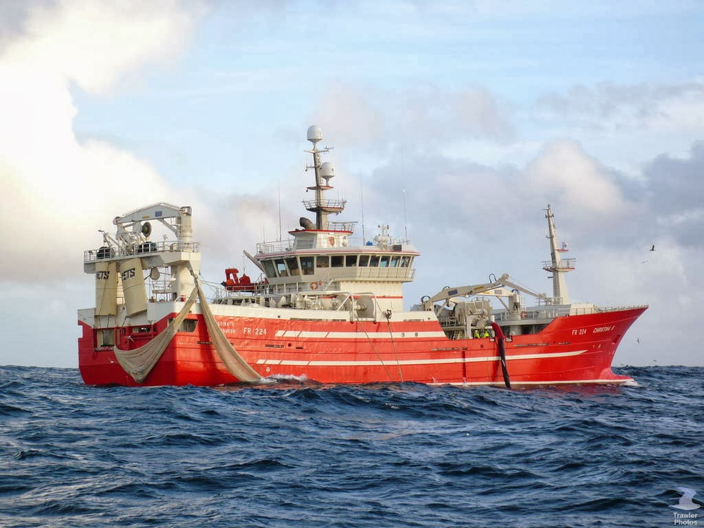

Investimento em Portugal

Wheatley, Canadá, 24 dez (Lusa) - A empresa luso-canadiana de pesca Presteve Foods Limited, com sede em Wheatley, no Ontário, pretende utilizar Portugal como "porta de entrada" para o mercado europeu na exportação de peixes, disse à Lusa o seu presidente.
Ulysses Pratas, presidente da empresa luso-canadiana de pesca, importação e exportação e transformação de peixe fresco dos grandes lagos do Canadá e Estados Unidos, referiu que tem "o sonho de abrir uma delegação em Portugal, na Nazaré", acrescentando que já houve conversas com o presidente da Câmara Municipal local nesse sentido.
Segundo o responsável, esta empresa "servirá para ligar ao resto da europa, funcionará como a entrada para a Europa, para países como Espanha, França ou Alemanha".
Ulysses Pratas disse também que a empresa pretende "contratar portugueses como experiência nesta indústria", mas sem revelar a quantidade de trabalhadores necessários.
Tudo começou na década de 1980, com apenas um barco de pesca no lago, mas hoje a Presteve Foods Limited tem quatro embarcações. Em 1986, construiu a fábrica de transformação do congelado e de peixe fresco e "foi crescendo até ao que é hoje".
Além da fábrica e escritórios em Wheatley, a empresa tem também outras instalações localizadas em Sault Ste Marie (Ontário). Conta com cerca de 200 funcionários, residentes naquela zona de Wheatley, Kingsville ou Liminghton, sendo metade de origem portuguesa ou lusodescendentes provenientes de zonas do país com tradição na atividade como a Nazaré, Peniche, Aveiro, Póvoa do Varzim, ou de outros portos piscatórios.
Ulysses Pratas ressalvou que a escolha desta atividade naquela zona dos grandes lagos se deveu ao facto de querer "manter a ligação às zonas de Portugal com tradição piscatória".
A empresa luso-canadiana tem uma produção anual de 6,350 toneladas, em qualidades de peixe do lago como a perca ou o lúcio.
Após a transformação efetuada na fábrica, o peixe é vendido no Canadá, nos principais hipermercados e minimercados, principalmente nas províncias do Ontário e do Quebeque. Também é exportado para os Estados Unidos da América, Ásia e Europa.
Para já, disse Ulysses Pratas, existem perspetivas no aumento da exportação para países com mercados emergentes como é o caso do asiático.
Existem cerca de 560 mil portugueses ou lusodescendentes no Canadá (aproximadamente cinco mil na região de Wheatley e Liminghton).